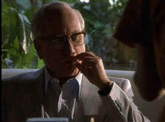

|
Believe me, Lansky
does not break any new ground in terms of biopics or mob movies.
With a script from David Mamet, the life of the legendary mob
manipulator is told in a series of flashbacks. Lansky,
seeking asylum in Israel, awaits the decision of the parliament
debate of his fate. As he ponders his future, he thinks back to his
past. This free thought style of looking back at his life leads to
some confusion of time. This is Mamet trying hard to inject some
vitality into the script. It backfires.
The best scenes feature a
younger Lansky as he stumbles into the mob and quickly works
his way up through the ranks. These formative years when he bonds
with Charles “Lucky” Luciano have some sparkle to them. The
period settings are quite well done. The film fails to give the home
life of the mobster any resonance and Israel scenes are nothing more
than boring.
 |
|
Dreyfuss puffs and ponders.
©HBO |
Richard
Dreyfuss does an adequate job as the older Lansky with Max Perlich
bringing a fair measure of energy to the young mobster on the rise.
Eric Roberts chews some scenery with appeal as Benjamin “Bugsy”
Siegel, but it’s an upfront performance only. Anthony LaPaglia is
effective as Luciano.
Director John McNaughton directs this made
for HBO production with any particular insights or style.
McNaughton, who has directed some original films like Henry:
Portrait of a Serial Killer
and Mad Dog and
Glory and the
appealingly trashy Wild
Things, doesn’t seem to know where this movie should go. The production is
very static, even though segments run through Israel, Cuba, Las
Vegas and Meyer Lansky’s home turf of New York.
The
DVD is an excellent 1.33 aspect ratio transfer. Lansky is
consistently sharp with excellent contrast ratio. Colors are
accurate and there’s no hint of unwanted grain. The Dolby Digital
2-channel surround provides a adequate sonic platform for the DVD.
|